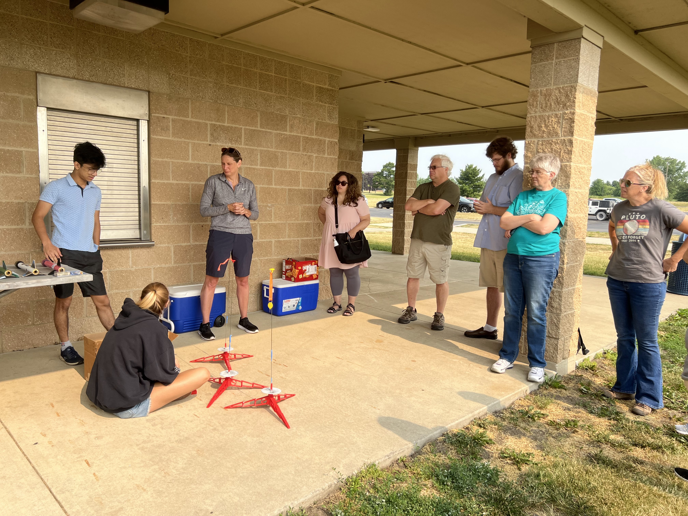
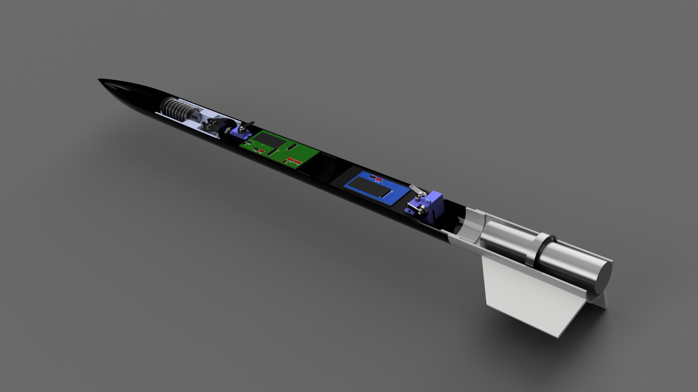

Conducted foundation research and design for short-range missile systems targeting drone countermeasures.
Analyzed project specification to create/present a detailed 2-month action plan successfully to go from concept-to-design.
Conceptualized 3 engineering design variants for senior engineers within 2 weeks to kickstart project development.
Designed vehicle trajectory by hand and modelled it using python to gain insight on needed propellant calculations.
Calculated potential propulsive & aerodynamic forces – by hand – on vehicle and selected structure materials accordingly.
Created 6 weekly design update presentations to verify technical integrity and reduce development time by 20-50%.
Wrote a final 40-page engineering design report outlining math, references, CAD designs, blueprints, and future steps.

Aerospace Educational Development & Outreach
Apr 2023 - May 2024
Department of Aerospace Engineering – University of Illinois, Urbana Champaign
Worked under the Aerospace Department’s NDEP (National Defense Education Program) Department of Defense Grant.
Taught 15+ STEM teachers & students in rocket science, guiding them through building, flying, and analyzing rockets.
Built, optimized, and troubleshooted 150+ short range rockets & avionics to collect flight data & analyze trends
Identified and implemented course improvements through detailed surveys that improved course structure & effectiveness.

Avionics Engineering Intern
Jan 2021 - Feb 2021
Space Technology and Aeronautical Rocketry (S.T.A.R.)
Trained to use software for rocket, avionics, and system analysis within 2 weeks (OpenRocket, ArduinoIDE, Proteus-8, EagleEDA, & Fusion360).
Led the avionics section in a 6-person team to design and write engineering design reports on a ‘Static Solid Rocket Motor
Test Pad’ and a ‘High Powered Rocket’. The reports were a compilation of work and research conducted over a month.
Prepared sales pitches for each creation to present in front of company leadership. We were approved on our first attempt.